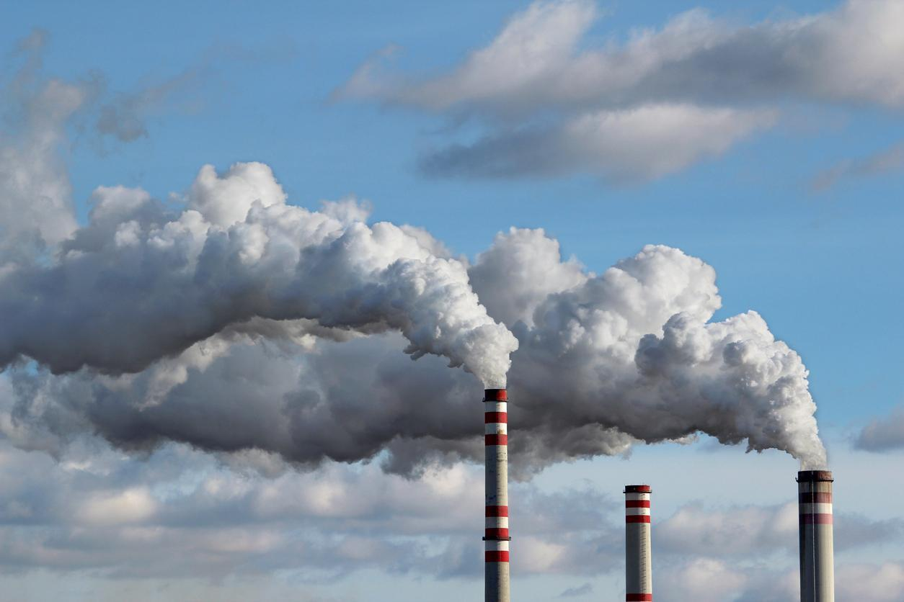
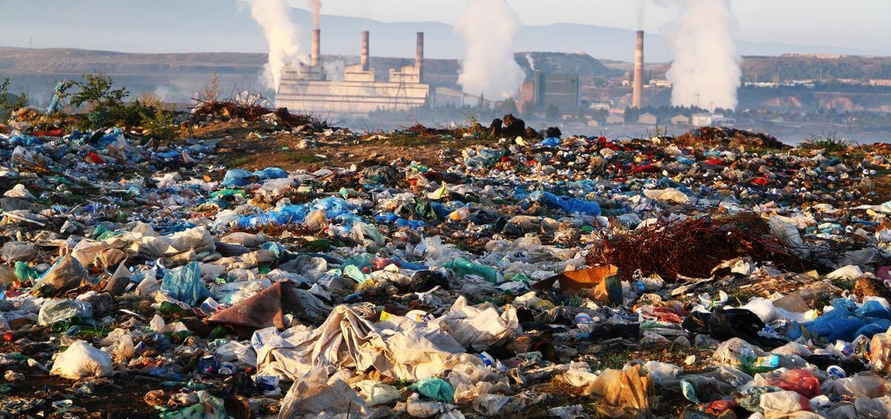
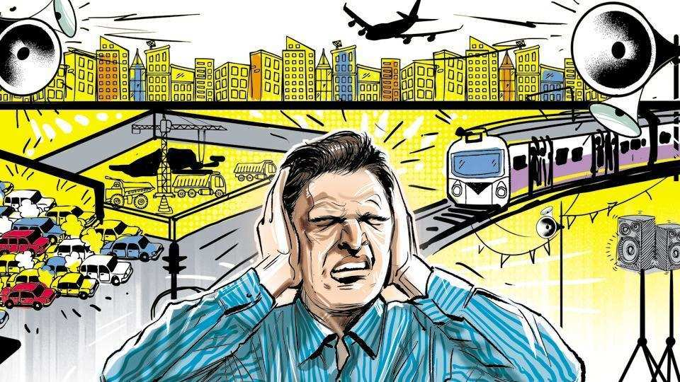

Environmental pollution is a major global issue that threatens the health of humans, animals, and ecosystems. Among the many forms of pollution, four of the most common and harmful types are air, water, soil, and noise pollution. Each type arises from different sources and has distinct effects on the environment.
1) Air Pollution: This occurs when harmful gases and particles such as carbon monoxide, sulfur dioxide, and nitrogen oxides are released into the atmosphere. Common sources include vehicle emissions, industrial processes, and burning fossil fuels. Air pollution contributes to respiratory problems, heart disease, acid rain, and global warming.
2) Water Pollution: Caused by the discharge of pollutants like chemicals, plastics, sewage, and industrial waste into rivers, lakes, and oceans. Water pollution affects aquatic life, contaminates drinking water, and disrupts ecosystems.

3) Soil Pollution: Often the result of excessive use of pesticides, disposal of industrial waste, oil spills, and landfill leakage. It leads to reduced soil fertility, affecting plant growth and potentially contaminating crops.
Noise Pollution: Generated by traffic, construction, factories, and loud machinery. Though it doesn’t leave physical residue, it causes stress, hearing loss, sleep disturbances, and affects both humans and animals.
Environmental pollution is a significant issue that impacts the health of humans, animals, and ecosystems. Among the most harmful types of pollution are air, water, soil, and noise pollution, each causing unique problems. Air pollution is caused by the release of harmful gases and particles into the atmosphere, primarily from vehicle emissions, industrial activities, and the burning of fossil fuels. This pollution contributes to respiratory diseases, heart conditions, and global warming. Water pollution occurs when chemicals, plastics, sewage, and industrial waste are discharged into water bodies like rivers, lakes, and oceans. It harms aquatic life, makes water unsafe for drinking, and disrupts entire ecosystems. Soil pollution is the result of pesticide overuse, improper waste disposal, and oil spills. It reduces soil fertility, affecting agriculture and contaminating the food chain. Finally, noise pollution is caused by the constant noise from traffic, factories, and construction sites. While less visible, noise pollution affects human health, leading to stress, sleep disturbances, and hearing loss, and also impacts wildlife by disrupting communication and migration patterns. Each of these types of pollution requires urgent attention to protect our environment, health, and future generations. Addressing these problems through sustainable practices is essential for a cleaner, healthier planet.